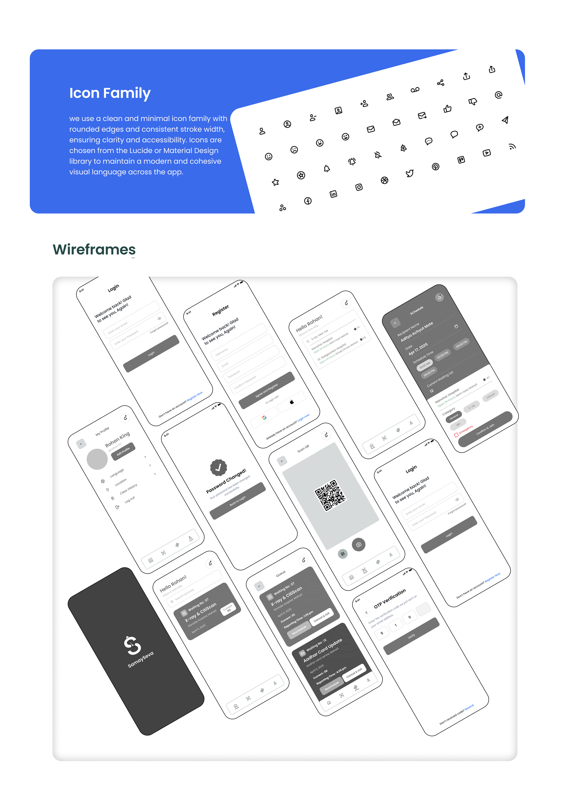
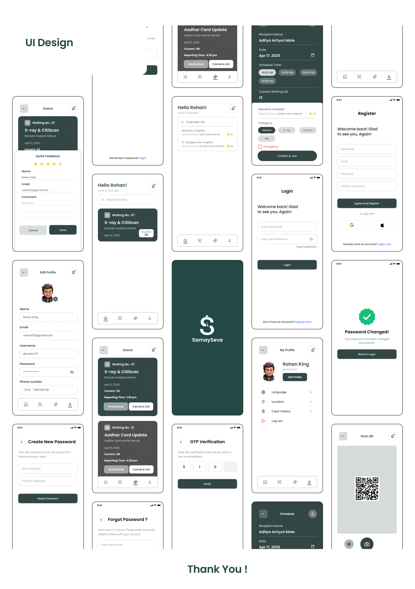

UX/UI Case Study
SamaySeva – Smart Queue Management App
A mobile app that helps users join queues remotely and track waiting progress in real time.

Overview
SamaySeva is a smart queue management app designed to reduce physical waiting time in hospitals, banks, restaurants, government offices, and service centers. Users can join a queue remotely and receive live updates regarding their queue position, estimated waiting time, and service progress.
Problem & Solution
The Problem
Long waiting lines in hospitals, banks, restaurants, and public service offices waste time, create chaos, and cause stress for customers—especially the elderly and the differently-abled.
The Solution
SamaySeva allows users to join queues remotely and receive real-time updates regarding their position, estimated wait times, and service progress, effectively optimizing time for both users and service providers.
Research
Project Timeline
UI/UX Design Process
The design process for SamaySeva is segmented into three key stages:
1 Empathize & Research
The goal of this phase is to understand real-world pain points users experience while waiting in physical queues. By gathering insights on how service providers manage customer flow, the team ensures the app meets genuine user needs and respects operational service constraints.
User Personas
Ramesh, 65 (Retired)
Goal: Wants to visit the bank and hospital without standing for hours.
Frustration: Physical exhaustion from long queues, feels chaotic and stressful.
Priya, 28 (Software Engineer)
Goal: Grab lunch or finish public service tasks quickly during work breaks.
Frustration: Unpredictable waiting times ruin her schedule; hates wasting time.
2 User Flow Architecture
The app is structured to guide the user from entry to queue management:
- App Entry: Splash screen, onboarding/intro, and secure login/signup (Phone, Google/Email).
- Home Screen: Features search bar/location detection, a list of nearby venues, and recommended/recent places.
- Queue Management: Users can view their position, estimated wait time, receive live updates, request extra time, or cancel their queue spot.
- Notifications: Alerts for wait time changes, reminders, and queue completion.
- Profile & Settings: User info, accessibility options, language preferences, help, logout.
3 Style Guide & Visual Identity
To maintain a professional and clean aesthetic, the design utilizes the following:
- Font: Poppins (Weights: Regular, Medium, Semi-bold)
Color Palette:
User Flow Diagram

Wireframes

UI Designs

Outcome
SamaySeva delivers a smooth and user-friendly experience that reduces physical waiting time, improves transparency, and creates a structured queue system for both customers and service providers.